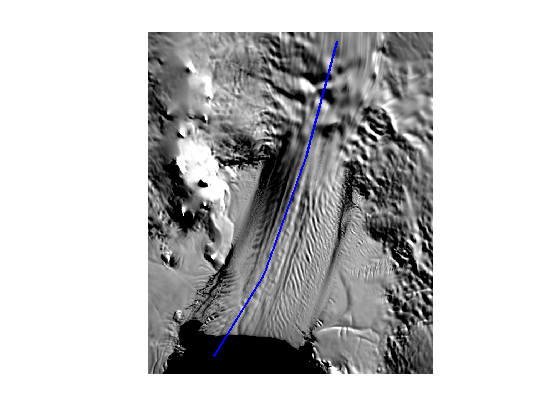
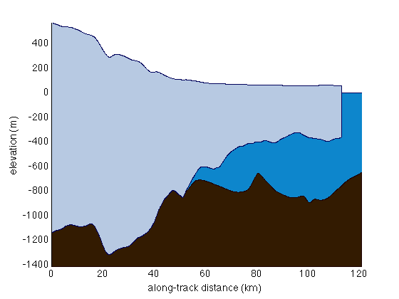
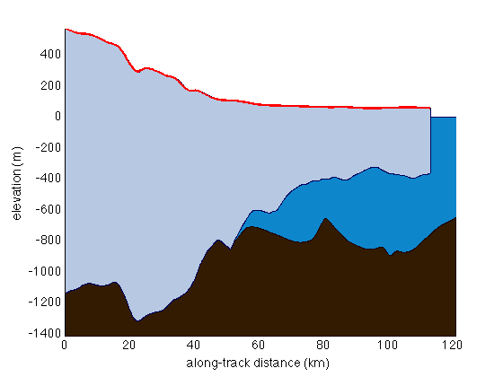
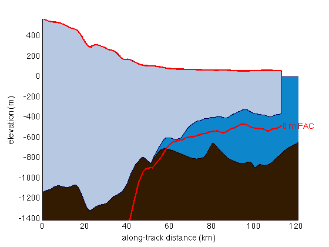
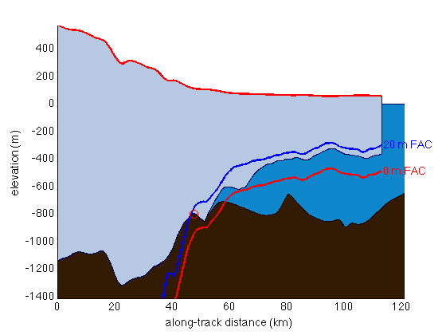
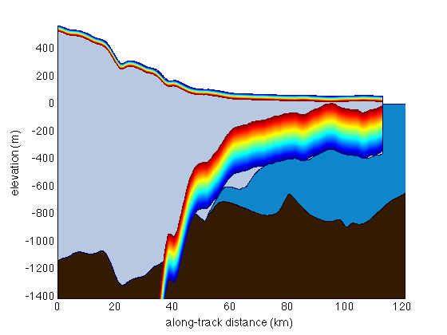
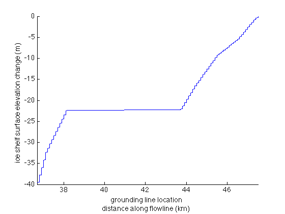

freeboard2thickness documentation
freeboard2thickness is part of Antarctic Mapping Tools for Matlab (Greene et al., 2017). Click here for a complete list of functions in AMT.
freeboard2thickness estimates ice thickness from surface height above sea level, assuming hyrostatic equilibrium.
Contents
Syntax
T = freeboard2thickness(F) T = freeboard2thickness(...,'rhoi',iceDensity) T = freeboard2thickness(...,'rhow',waterDensity) T = freeboard2thickness(...,'rhos',snowDensity) T = freeboard2thickness(...,'Ts',snowThickness)
Description
T = freeboard2thickness(F) estimates the ice thickness T in meters from height above the geoid F in meters.
T = freeboard2thickness(...,'rhoi',iceDensity) specifies ice density in kg/m^3. Default ice density is 917 kg/m^3.
T = freeboard2thickness(...,'rhow',waterDensity) specifies water density in kg/m^3. Default water density is 1027 kg/m^3.
T = freeboard2thickness(...,'rhos',snowDensity) specifies snow density in kg/m^3. Default snow density is 350 kg/m^3, however the default snow thickness is 0 m, so the snow density value will only affect calculations if snow thickness is specified.
T = freeboard2thickness(...,'Ts',snowThickness) specifies snow thickness in meters. Default snow thickness is 0 m.
Example 1:
The surface of an iceberg is 80 cm above sea level and it's pure ice. How thick is the iceberg?
T = freeboard2thickness(0.8)
T =
7.4691
And you can go back the other way with the sister function:
F = thickness2freeboard(7.47)
F =
0.8001
Example 2:
The surface of an iceberg is 80 cm above sea level, including 40 cm of snow which has a density of 300 kg/m^3. How thick is the iceberg?
T = freeboard2thickness(0.8,'Ts',0.4,'rhos',300)
T =
4.8255
Example 3: When PIGs float
This example looks at a flowline down Pine Island Glacier. To get the coordinates of an actual flowline based on surface velocities you can use the flowline function, but for now let's just enter some manual points and plot them with a MODIS Mosaic of Antarctica background image. I'm densifying the points along the flowline to 100 m spacing with the pspath function:
[lat,lon] = pspath([-75.3585 -75.2041 -75.0089 -74.8032],... [-98.0220 -99.4048 -100.7342 -101.5879],... 100); % (100 m spacing along track) plotps(lat,lon,'b-','linewidth',2) modismoaps axis off
If you have the Bedmap2 plugin for AMT making elevation profiles along a line is pretty easy:
figure bedmap2_profile(lat,lon);
This might seem a bit reduntant, but let's plot the Bedmap2 surface in red. We'll also need to plot it as a function of distance along the lat,lon path the same way bedmap2_profile plotted the distance above. So use pathdistps to get the cumulative distance along track:
% Get surface elevation from Bedmap2: sfz = bedmap2_interp(lat,lon,'surface'); % Calculate distance along the flowline in kilometers: d = pathdistps(lat,lon,'km'); % Plot the interpolated Bedmap2 surface as a thick red line: plot(d,sfz,'r','linewidth',2)
Now we can estimate the base of the ice using the hydrostatic assumption. Start by assuming the ice shelf is made of pure ice with a density of 917 kg/m^3.
% Calculate ice thickness from freeboard: thickness = freeboard2thickness(sfz); % The base elevation is the surface minus thickness: base = sfz-thickness; % Plot the hydrostatic ice base as a thick red line: plot(d,base,'r','linewidth',2) % Find the index of the last finite surface elevation measurement: ind = find(isfinite(base),1,'last'); % Place a text label: text(d(ind),base(ind),' 0 m FAC','fontweight','bold','color','r')
That's not a fantastic match! As I recall, to get ice shelf base elevations, Bedmap2 used the hydrostatic assumption after accounting for some amount of firn air content in the ice column. We can do the same by setting the "snow" thickness to 20 m and set the density of the snow to 0 kg/m3. I think Ligtenberg's data show that firn air content is something like 20 m for PIG. So let's try this again with 20 m FAC:
thickness2 = freeboard2thickness(sfz,'Ts',20,'rhos',0); base2 = sfz-thickness2; plot(d,base2,'b','linewidth',2) text(d(ind),base2(ind),' 20 m FAC','fontweight','bold','color','b')

Glacier thinning and grounding line retreat
bed = bedmap2_interp(lat,lon,'bed'); base = sfz - freeboard2thickness(sfz,'Ts',15,'rhos',0); % find the index where the ice base lifts off the bed: ind = find(base>=bed,1,'first') ; % Plot a red circle at hydrostatic grounding line: plot(d(ind),base(ind),'ro','markersize',10)
Here's a crude approximation of grounding line retreat as a function of glacier thinning. We'll loop through, finding the grounding line location just as above, but for an ever-thinning PIG:
% Steps of 10 cm surface elevation change from 0 to 40 m: dh = 0:0.1:40; % Preallocate grounding line location vector: gl = nan(size(dh)); % Make a new profile figure figure bedmap2_profile(lat,lon); % make a colormap: colors = jet(length(dh)); % Loop through each thinning value: for k = 1:length(dh); % Surface elevation with k amount of thinning: sfzi = sfz - dh(k); % Hydrostatic base elevation with thinning: basei = sfzi - freeboard2thickness(sfzi,'Ts',15,'rhos',0); % Plot surface and ice base elevations: plot(d,sfzi,'-','color',colors(k,:)) plot(d,basei,'-','color',colors(k,:)) % find the index where the ice base lifts off the bed: ind = find(basei>=bed,1,'first'); % log the grounding line location: gl(k) = d(ind); end
Now we can plot grounding line location as a function of surface elevation change.
figure plot(gl,-dh) axis tight box off xlabel({'grounding line location';'distance along flowline (km)'}) ylabel 'ice shelf surface elevation change (m) '
I should stress that the analysis above is mighty crude. I would not trust these exact numbers because we've completely neglected stress within the ice, grounding zone dynamics, bed uncertainty, ice thickness uncertainty, etc., but a basic principle of glaciology is shown: Starting from the top right corner of the plot, as the ice thins, the grounding line retreats. And sometimes, a little bit of thinning can cause a lot of grounding line retreat.
Citing AMT
If this function or any other part of Antarctic Mapping Tools is useful for you, please cite the paper that describes AMT.
Greene, C. A., Gwyther, D. E., & Blankenship, D. D. Antarctic Mapping Tools for Matlab. Computers & Geosciences. 104 (2017) pp.151-157. doi:10.1016/j.cageo.2016.08.003.
Author Info
This function was written by Chad A. Greene of the University of Texas Institute for Geophysics (UTIG), April 2017, for inclusion in the Antarctic Mapping Tools package.